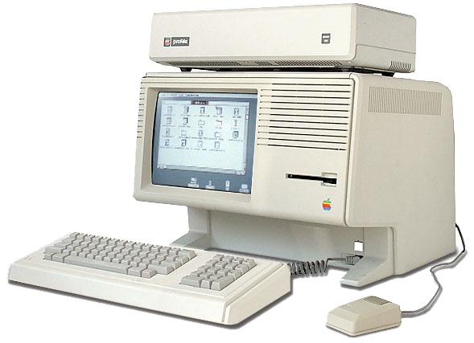

Apple Lisa
Introduction
Apple Lisa was meant to take over the market after the popularity of Apple II. The project was led by John Couch1. At the beginning Lisa was meant to become a $2’000 business machine, or at least that was what the company approved in 1979. They also set the timeline for the year 1981 for which the computer had to be released, but in the late 1979 were made only a few steps in the creation of the computer, in fact Apple haven't even chosen the processor the machine will be based on and the work group around Lisa was actually still discussing the fact that they were building something too similar to the Apple II.
The Xerox PARC influence
At this point something important happened: Jobs was invited from Raskin2 to visit Xerox labs to get inspiration.During one of the several tour in Xerox labs Jobs understood the importance of the interface of the Xerox Alto, this machine was one among an entire computer spices to have an interface that was completely different from the simple black screen with white code written on it. From this point born a complete new vision of the whole Lisa project: suddenly the purpose wasn't to build only a better business machine anymore, but they decided to implement the software based on the innovation already created at PARC. The marketing and planning manager of Lisa, Trip Hawkins, include in the specifications the essential need of a graphical user interface! But it wasn't the only important modify done on the production list, he spoke also of a mouse and an object oriented user interface as well as networking systems. At this point, with the help of some Xerox employs, the real Lisa project actually started.
The Hardware of Lisa
At this point i will skip the history of the software developed for Lisa, of which you can find more information here, and talk about the hardware that were designed for it: the group decides that a 16-bit processor would be the minimum necessary to optimize the use of a bitmapped display and they spend some time choosing the right processors to use, considering the Intel 8088 and the Zilog Z8000. At the end they decide to use the Motorola 68000. Another discussed decision was the choice of the floppy drive: Steve Jobs, before were pushed out of the project, fought for the use of the Apple’s 5.25’’ “Twiggy” floppy drive. This particular unit was very unreliable and still had some problem at the time, but the engineer decided to go for it, assuming that the problems will be resolved for the launch of Lisa on the market. To keep the dimension of the computer to a small size the work group decide to put the CRT and the CPU in the same case and they actually thought to mount it so that was easy to make an upgrade on it or to just do a routine service for it. This little detail can seem pretty obvious, but in reality it was the beginning of the idea that machines could be hardware updated and not only in term of software.
A price to high...
By 1983 Lisa was ready and released. The product was large, publicized and both Times and the Newsweek published a lot of articles about the product and Apple talking about a revolution. The release price was set to $9,995 that was enormous, but necessary to cover the millions of dollars that the company invested in the machine. After a pretty good start in term of selling's the all things began irremediably to sink due to the too high price and also to the release of the Macintosh in 1984. During 1985 the seals dropped even more than the expectation and by 1986, after several revisions, the Lisa was abandoned.
Commercial of the Apple Lisa:
External Links
- [Visited on 06/11/2014] John Couch
- [Visited on 06/11/2014] Jef Raskin
- [Visited on 06/11/2014] Image Apple Lisa uder fair use
- [Visited on 06/11/2014] www.lowendmac.com